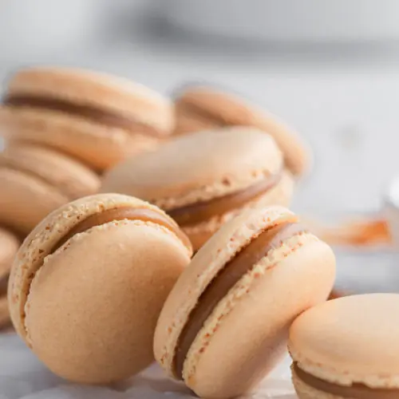

Salted Caramel Macarons
- Total time1 hr
- Serves50
- Ingredients13
- Steps27

Ingredients
Macaron Shells
- 150 g almond meal
- 150 g pure icing sugar
- 55 g aged egg whites (A) see post
- 55 g aged egg whites (B)
- pinch cream of tartar
- 150 g caster sugar
- 38 g water
- caramel food colouring I use brown and yellow, to get desired colour
Salted Caramel Filling
- 250 g caster sugar
- 75 ml water
- 120 ml heavy cream
- 200 g butter cubed
- 1 tsp sea salt flakes to taste
Directions
For the macaron shells
- Preheat oven to 150°C/ 130° Fan/ 300°F and place an empty baking tray on the middle rack.
- Line baking trays with silpat mats (you'll 4 mats, if you want to pipe the macarons all at once).
- Prepare a large disposable piping bag with a #1A piping tip and place the bag inside a tall cup/jug, ready to be filled (see post for tips on using the piping bag).
- In a small saucepan, heat the caster sugar and water over medium heat. Give a little stir as you insert the digital thermometer. Once the syrup starts to boil, stop stirring, as this will cause crystals.
- In a medium sized bowl, begin whisking the egg whites (A) and cream of tartar once the sugar syrup reaches 110°C. Use a hand held electric mixer on medium speed to form soft peaks, keeping watch of the syrup, as it must not go over 118°.
- As soon as the sugar syrup reaches 118°, remove the thermometer and (with the mixer turned to low) pour the syrup into the whisked egg whites in a thin, steady stream. This is the Italian meringue.
- Increase speed to medium and continue to whisk until mixture cools to 35°. At this point, you can add desired food colouring (I used a combination of chocolate brown and yellow).
- In a separate mixing bowl, combine the tant pour tant (almond meal and icing sugar) with the remaining egg whites (B) with a rubber spatula, to form a thick paste.
- Once the Italian meringue has cooled to 35°, scoop some out with the rubber spatula and mix it into the paste to loosen it.
- Add the remaining meringue and continue to fold through, scraping the bowl and folding the mixture over, whilst rotating the bowl. Make sure you scrape the bottom, to get all of the paste.
- Continue folding, scraping and rotating (macaronner) until the batter is smooth and shiny. Batter should have the consistency of cake batter and not too thin (see post).
- Scoop batter into prepared piping bag, then place the bag on the bench and push out air pockets. Twist the end of the bag and secure with a rubber band (I find twisting it is sufficient).
- Piping the shells: holding the nozzle end with one hand and the twisted end with the other, hold the bag directly above the marked silpat mat and gently squeeze from the top hand. Release pressure before the batter reaches the inside edge of the circle and give the bag a little twist at the nozzle end, to break the release of batter.
- Place a tea towel onto the kitchen bench, then give a gentle whack of the tray, to release air bubbles. Rotate tray and repeat.
- Let macarons rest for 15 minutes, to dry a little.
- Place tray with the piped shells into oven, directly on top of the tray that's already in there.
- Bake at 150°C/ 130° Fan/ 300°F for 5 minutes, then reduce oven to 140°C/ 120° Fan/ 285°F and continue to bake for another 10 minutes. Repeat with remaining trays. (I bake one tray at a time, but you can bake several if using fan forced setting).
- After 15 minutes check macaron shells -if they still wiggle, they're not quite ready. Give them another minute.
- Once cooked, immediately slide silpat mat off baking tray and onto the bench to cool. Once completely cooled, shells can be gently lifted from mat (see post), put into pairs and filled.
For the filling
- In a medium sized saucepan, heat the sugar and water over medium heat.
- With minimal stirring, cook the sugar until it's lightly golden brown.
- Carefully add the cream in a steady stream, stirring with a rubber spatula to prevent burning. Be careful, as the mixture bubbles up.
- Use a digital thermometer and heat the mixture to 108°C/ 226°F
- Remove from heat and add small cubes of the butter, whisking as you go, to ensure a smooth caramel. Stir through the salt flakes.
- Pour into a container and chill for about an hour, or until thick enough to pipe.
- Scoop into a piping bag fitted with a #1A nozzle and pipe onto half of the macaron shells, sandwiching with the other half.
- Refrigerate or freeze in an airtight container.
Recipe credit: applecakeannie.com